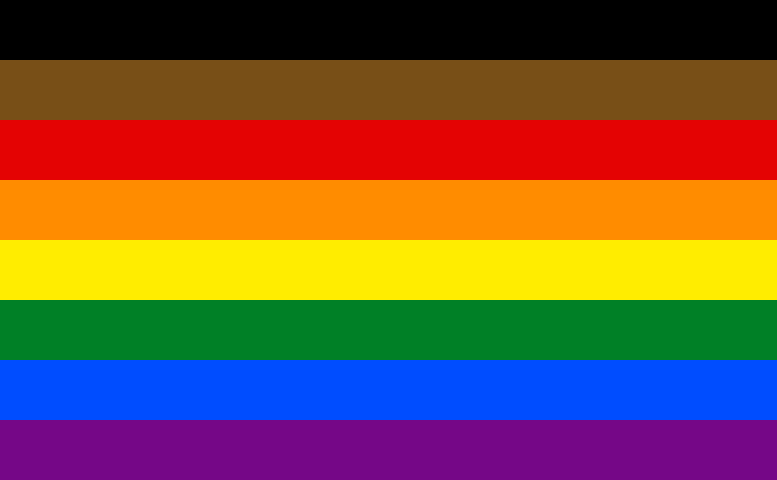

The Philadelphia Pride Flag
Flag History and Meaning
The Philadelphia Pride flag (also called the More Color More Pride flag or the Philly Pride flag) was created in 2017 as part of a citywide campaign called "More Color More Pride". After some high-profile news stories exposed racism in Philadelphia's Gayborhood in 2016, many people, particularly people of color, called for more inclusion and intersectionality in the city's LGBTQ+ community. Although there had been conversations about discrimination in the past, not much had been done about it. This flag was created to represent the legacy of activism, call for change, and make sure that inclusion also meant including LGBTQ+ people of color.
The flag was created by Philadelphia's Office of LGBT Affairs and Tierney, a design agency, in May 2017. They used Gilbert Baker's 6-stripe rainbow flag and added black and brown stripes to the top. The flag was unveiled during Philadelphia Pride celebrations in June 2017, and it has since then gotten recognition around the world. This design even inspired the Progress Pride flag and the Intersex-Inclusive Progress Pride flag.
Each color of the Philadelphia Pride flag has its own meaning (with the rainbow color meanings taken from Gilbert Baker's design):
- Black and Brown: LGBTQ+ people of color, including their experiences, contributions, and struggles within the community
- Red: life
- Orange: healing
- Yellow: sunlight
- Green: nature
- Blue: serenity, harmony
- Purple: spirit
Sources and Image Attribution
Sources:
- The Philadelphia Inquirer's "The Philly Pride flag, explained"
- Good Good Good's "What Is the Philadelphia Pride Flag & What Does It Mean?"
Images:
- "Philadelphia Pride Flag" by Philadelphia City Council and Tierney, public domain
{kind=link}